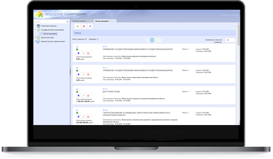

ПК «ПЕРЕЧНИ УСЛУГ И РАБОТ»
Программный комплекс «Перечни услуг и работ» — решение, предназначенное для обеспечения финансовых органов Российской Федерации инструментом автоматизированной поддержки процесса формирования и ведения региональных перечней услуг и работ. Решение является элементом региональных и муниципальных систем управления общественными финансами.
Особенности решения
Комплексная автоматизация процессов, связанных с формированием и ведением Региональных перечней услуг и работ
Современный дизайн и эргономика интерфейсов, создающие комфорт и удобство работы пользователям
Полное соблюдение всех требований методологии формирования реестровых записей
Эффективный подход к реализации механизма формирования заявок на изменения реестровых записей
Применение ведомственного перечня услуг и работ, как инструмента при подготовке государственных (муниципальных) заданий
Реализация возможности хранения версий реестровых записей
Гибкая настройка маршрутов внутриведомственного и внешнего согласования реестровых записей с визуализацией листа согласования
Утверждение документов с использованием электронной подписи
Автоматизированный контроль данных

ФУНКЦИОНАЛЬНЫЕ ВОЗМОЖНОСТИ
Автоматизированный контроль данных
Автоматизированная проверка проектов реестровых записей Регионального перечня услуг при формировании записей и при переходах согласно бизнес процессу. Формирование протоколов проверки по результатам выполнения операций.
Взаимодействие со смежными системами
Передача данных регионального и (или) ведомственного перечня услуг и работ для формирования государственных (муниципальных) заданий на оказание услуг (выполнение) работ.

контактный центр
8 800 200 20 73
звонок бесплатный